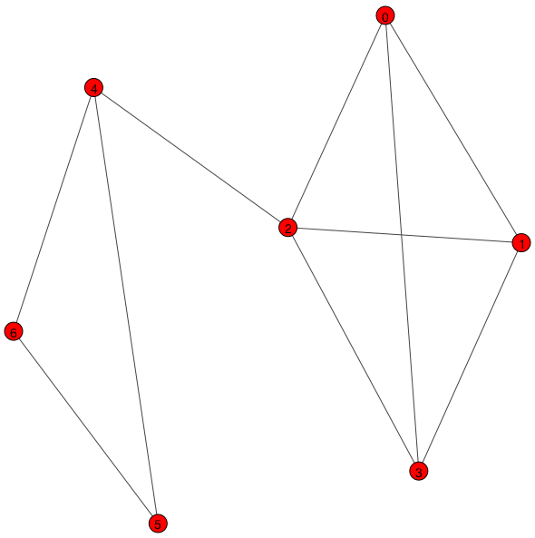

<!doctype html>
<html lang="ru" class="no-js">
  <head>
    
      <meta charset="utf-8">
      <meta name="viewport" content="width=device-width,initial-scale=1">
      
        <meta name="description" content="Лекции и практические задания по программированию на Python">
      
      
        <link rel="canonical" href="https://dementiy.github.io/assignments/vk_api/">
      
      
        <meta name="author" content="Sorokin Dmitrii">
      
      <link rel="shortcut icon" href="../../assets/images/favicon.png">
      <meta name="generator" content="mkdocs-1.1.2, mkdocs-material-5.5.6">
    
    
      
        <title>Работа с API ВКонтакте - Программирование на Python</title>
      
    
    
      <link rel="stylesheet" href="../../assets/stylesheets/main.63b94e9e.min.css">
      
        <link rel="stylesheet" href="../../assets/stylesheets/palette.7f672a1f.min.css">
      
      
        
        
        <meta name="theme-color" content="#3f51b5">
      
    
    
    
      
        <link href="https://fonts.gstatic.com" rel="preconnect" crossorigin>
        <link rel="stylesheet" href="https://fonts.googleapis.com/css?family=Roboto:300,400,400i,700%7CRoboto+Mono&display=fallback">
        <style>body,input{font-family:"Roboto",-apple-system,BlinkMacSystemFont,Helvetica,Arial,sans-serif}code,kbd,pre{font-family:"Roboto Mono",SFMono-Regular,Consolas,Menlo,monospace}</style>
      
    
    
    
      <link rel="stylesheet" href="../../css/extra.css">
    
    
      
        
<script>window.ga=window.ga||function(){(ga.q=ga.q||[]).push(arguments)},ga.l=+new Date,ga("create","UA-111461883-1","dementiy.github.io"),ga("set","anonymizeIp",!0),ga("send","pageview"),document.addEventListener("DOMContentLoaded",function(){document.forms.search&&document.forms.search.query.addEventListener("blur",function(){if(this.value){var e=document.location.pathname;ga("send","pageview",e+"?q="+this.value)}})}),document.addEventListener("DOMContentSwitch",function(){ga("send","pageview",document.location.pathname)})</script>
<script async src="https://www.google-analytics.com/analytics.js"></script>
      
    
    
  </head>
  
  
    
    
    
    <body dir="ltr" data-md-color-scheme="default" data-md-color-primary="indigo" data-md-color-accent="indigo">
  
    
    <input class="md-toggle" data-md-toggle="drawer" type="checkbox" id="__drawer" autocomplete="off">
    <input class="md-toggle" data-md-toggle="search" type="checkbox" id="__search" autocomplete="off">
    <label class="md-overlay" for="__drawer"></label>
    <div data-md-component="skip">
      
        
        <a href="#_1" class="md-skip">
          Перейти к содержанию
        </a>
      
    </div>
    <div data-md-component="announce">
      
    </div>
    
      <header class="md-header" data-md-component="header">
  <nav class="md-header-nav md-grid" aria-label="Header">
    <a href="https://dementiy.github.io/" title="Программирование на Python" class="md-header-nav__button md-logo" aria-label="Программирование на Python">
      
  
  <svg xmlns="http://www.w3.org/2000/svg" viewBox="0 0 24 24"><path d="M12 8a3 3 0 003-3 3 3 0 00-3-3 3 3 0 00-3 3 3 3 0 003 3m0 3.54C9.64 9.35 6.5 8 3 8v11c3.5 0 6.64 1.35 9 3.54 2.36-2.19 5.5-3.54 9-3.54V8c-3.5 0-6.64 1.35-9 3.54z"/></svg>

    </a>
    <label class="md-header-nav__button md-icon" for="__drawer">
      <svg xmlns="http://www.w3.org/2000/svg" viewBox="0 0 24 24"><path d="M3 6h18v2H3V6m0 5h18v2H3v-2m0 5h18v2H3v-2z"/></svg>
    </label>
    <div class="md-header-nav__title" data-md-component="header-title">
      
        <div class="md-header-nav__ellipsis">
          <span class="md-header-nav__topic md-ellipsis">
            Программирование на Python
          </span>
          <span class="md-header-nav__topic md-ellipsis">
            
              Работа с API ВКонтакте
            
          </span>
        </div>
      
    </div>
    
      <label class="md-header-nav__button md-icon" for="__search">
        <svg xmlns="http://www.w3.org/2000/svg" viewBox="0 0 24 24"><path d="M9.5 3A6.5 6.5 0 0116 9.5c0 1.61-.59 3.09-1.56 4.23l.27.27h.79l5 5-1.5 1.5-5-5v-.79l-.27-.27A6.516 6.516 0 019.5 16 6.5 6.5 0 013 9.5 6.5 6.5 0 019.5 3m0 2C7 5 5 7 5 9.5S7 14 9.5 14 14 12 14 9.5 12 5 9.5 5z"/></svg>
      </label>
      
<div class="md-search" data-md-component="search" role="dialog">
  <label class="md-search__overlay" for="__search"></label>
  <div class="md-search__inner" role="search">
    <form class="md-search__form" name="search">
      <input type="text" class="md-search__input" name="query" aria-label="Поиск" placeholder="Поиск" autocapitalize="off" autocorrect="off" autocomplete="off" spellcheck="false" data-md-component="search-query" data-md-state="active">
      <label class="md-search__icon md-icon" for="__search">
        <svg xmlns="http://www.w3.org/2000/svg" viewBox="0 0 24 24"><path d="M9.5 3A6.5 6.5 0 0116 9.5c0 1.61-.59 3.09-1.56 4.23l.27.27h.79l5 5-1.5 1.5-5-5v-.79l-.27-.27A6.516 6.516 0 019.5 16 6.5 6.5 0 013 9.5 6.5 6.5 0 019.5 3m0 2C7 5 5 7 5 9.5S7 14 9.5 14 14 12 14 9.5 12 5 9.5 5z"/></svg>
        <svg xmlns="http://www.w3.org/2000/svg" viewBox="0 0 24 24"><path d="M20 11v2H8l5.5 5.5-1.42 1.42L4.16 12l7.92-7.92L13.5 5.5 8 11h12z"/></svg>
      </label>
      <button type="reset" class="md-search__icon md-icon" aria-label="Clear" data-md-component="search-reset" tabindex="-1">
        <svg xmlns="http://www.w3.org/2000/svg" viewBox="0 0 24 24"><path d="M19 6.41L17.59 5 12 10.59 6.41 5 5 6.41 10.59 12 5 17.59 6.41 19 12 13.41 17.59 19 19 17.59 13.41 12 19 6.41z"/></svg>
      </button>
    </form>
    <div class="md-search__output">
      <div class="md-search__scrollwrap" data-md-scrollfix>
        <div class="md-search-result" data-md-component="search-result">
          <div class="md-search-result__meta">
            Initializing search
          </div>
          <ol class="md-search-result__list"></ol>
        </div>
      </div>
    </div>
  </div>
</div>
    
    
      <div class="md-header-nav__source">
        
<a href="https://github.com/Dementiy/pybook-assignments/" title="Перейти к репозиторию" class="md-source">
  <div class="md-source__icon md-icon">
    
    <svg xmlns="http://www.w3.org/2000/svg" viewBox="0 0 448 512"><path d="M439.55 236.05L244 40.45a28.87 28.87 0 00-40.81 0l-40.66 40.63 51.52 51.52c27.06-9.14 52.68 16.77 43.39 43.68l49.66 49.66c34.23-11.8 61.18 31 35.47 56.69-26.49 26.49-70.21-2.87-56-37.34L240.22 199v121.85c25.3 12.54 22.26 41.85 9.08 55a34.34 34.34 0 01-48.55 0c-17.57-17.6-11.07-46.91 11.25-56v-123c-20.8-8.51-24.6-30.74-18.64-45L142.57 101 8.45 235.14a28.86 28.86 0 000 40.81l195.61 195.6a28.86 28.86 0 0040.8 0l194.69-194.69a28.86 28.86 0 000-40.81z"/></svg>
  </div>
  <div class="md-source__repository">
    Dementiy/pybook-assignments
  </div>
</a>
      </div>
    
  </nav>
</header>
    
    <div class="md-container" data-md-component="container">
      
        
      
      
        
          

  

<nav class="md-tabs md-tabs--active" aria-label="Tabs" data-md-component="tabs">
  <div class="md-tabs__inner md-grid">
    <ul class="md-tabs__list">
      
        
  
  
    <li class="md-tabs__item">
      
        <a href="../../lectures/immutable-types/" class="md-tabs__link">
          Лекции
        </a>
      
    </li>
  

      
        
  
  
    
    
  
  
    <li class="md-tabs__item">
      
        <a href="../setup_env/" class="md-tabs__link md-tabs__link--active">
          Практические работы
        </a>
      
    </li>
  

  

      
        
  
  
    <li class="md-tabs__item">
      
        <a href="../../notes/cross-entropy/" class="md-tabs__link">
          Заметки
        </a>
      
    </li>
  

      
    </ul>
  </div>
</nav>
        
      
      <main class="md-main" data-md-component="main">
        <div class="md-main__inner md-grid">
          
            
              <div class="md-sidebar md-sidebar--primary" data-md-component="navigation">
                <div class="md-sidebar__scrollwrap">
                  <div class="md-sidebar__inner">
                    <nav class="md-nav md-nav--primary" aria-label="Navigation" data-md-level="0">
  <label class="md-nav__title" for="__drawer">
    <a href="https://dementiy.github.io/" title="Программирование на Python" class="md-nav__button md-logo" aria-label="Программирование на Python">
      
  
  <svg xmlns="http://www.w3.org/2000/svg" viewBox="0 0 24 24"><path d="M12 8a3 3 0 003-3 3 3 0 00-3-3 3 3 0 00-3 3 3 3 0 003 3m0 3.54C9.64 9.35 6.5 8 3 8v11c3.5 0 6.64 1.35 9 3.54 2.36-2.19 5.5-3.54 9-3.54V8c-3.5 0-6.64 1.35-9 3.54z"/></svg>

    </a>
    Программирование на Python
  </label>
  
    <div class="md-nav__source">
      
<a href="https://github.com/Dementiy/pybook-assignments/" title="Перейти к репозиторию" class="md-source">
  <div class="md-source__icon md-icon">
    
    <svg xmlns="http://www.w3.org/2000/svg" viewBox="0 0 448 512"><path d="M439.55 236.05L244 40.45a28.87 28.87 0 00-40.81 0l-40.66 40.63 51.52 51.52c27.06-9.14 52.68 16.77 43.39 43.68l49.66 49.66c34.23-11.8 61.18 31 35.47 56.69-26.49 26.49-70.21-2.87-56-37.34L240.22 199v121.85c25.3 12.54 22.26 41.85 9.08 55a34.34 34.34 0 01-48.55 0c-17.57-17.6-11.07-46.91 11.25-56v-123c-20.8-8.51-24.6-30.74-18.64-45L142.57 101 8.45 235.14a28.86 28.86 0 000 40.81l195.61 195.6a28.86 28.86 0 0040.8 0l194.69-194.69a28.86 28.86 0 000-40.81z"/></svg>
  </div>
  <div class="md-source__repository">
    Dementiy/pybook-assignments
  </div>
</a>
    </div>
  
  <ul class="md-nav__list" data-md-scrollfix>
    
      
      
      


  <li class="md-nav__item md-nav__item--nested">
    
      <input class="md-nav__toggle md-toggle" data-md-toggle="nav-1" type="checkbox" id="nav-1">
    
    <label class="md-nav__link" for="nav-1">
      Лекции
      <span class="md-nav__icon md-icon">
        <svg xmlns="http://www.w3.org/2000/svg" viewBox="0 0 24 24"><path d="M8.59 16.58L13.17 12 8.59 7.41 10 6l6 6-6 6-1.41-1.42z"/></svg>
      </span>
    </label>
    <nav class="md-nav" aria-label="Лекции" data-md-level="1">
      <label class="md-nav__title" for="nav-1">
        <span class="md-nav__icon md-icon">
          <svg xmlns="http://www.w3.org/2000/svg" viewBox="0 0 24 24"><path d="M20 11v2H8l5.5 5.5-1.42 1.42L4.16 12l7.92-7.92L13.5 5.5 8 11h12z"/></svg>
        </span>
        Лекции
      </label>
      <ul class="md-nav__list" data-md-scrollfix>
        
        
          
          
          


  <li class="md-nav__item">
    <a href="../../lectures/immutable-types/" title="Неизменяемые типы данных" class="md-nav__link">
      Неизменяемые типы данных
    </a>
  </li>

        
          
          
          


  <li class="md-nav__item">
    <a href="../../lectures/mutable-types/" title="Изменяемые типы данных" class="md-nav__link">
      Изменяемые типы данных
    </a>
  </li>

        
          
          
          


  <li class="md-nav__item">
    <a href="../../lectures/control-statements/" title="Управляющие конструкции" class="md-nav__link">
      Управляющие конструкции
    </a>
  </li>

        
          
          
          


  <li class="md-nav__item">
    <a href="../../lectures/functions/" title="Функции" class="md-nav__link">
      Функции
    </a>
  </li>

        
          
          
          


  <li class="md-nav__item">
    <a href="../../lectures/ns_and_scopes/" title="Простарнство имен и области видимости" class="md-nav__link">
      Простарнство имен и области видимости
    </a>
  </li>

        
          
          
          


  <li class="md-nav__item">
    <a href="../../lectures/classes/" title="ООП. Классы. Магические методы" class="md-nav__link">
      ООП. Классы. Магические методы
    </a>
  </li>

        
          
          
          


  <li class="md-nav__item">
    <a href="../../lectures/descriptors/" title="ООП. Дескрипторы" class="md-nav__link">
      ООП. Дескрипторы
    </a>
  </li>

        
          
          
          


  <li class="md-nav__item">
    <a href="../../lectures/attribute_lookup/" title="ООП. Разрешение имен атрибтутов" class="md-nav__link">
      ООП. Разрешение имен атрибтутов
    </a>
  </li>

        
          
          
          


  <li class="md-nav__item">
    <a href="../../lectures/mro/" title="ООП. Порядок разрешения методов" class="md-nav__link">
      ООП. Порядок разрешения методов
    </a>
  </li>

        
          
          
          


  <li class="md-nav__item">
    <a href="../../lectures/iterators/" title="Итераторы" class="md-nav__link">
      Итераторы
    </a>
  </li>

        
      </ul>
    </nav>
  </li>

    
      
      
      

  


  <li class="md-nav__item md-nav__item--active md-nav__item--nested">
    
      <input class="md-nav__toggle md-toggle" data-md-toggle="nav-2" type="checkbox" id="nav-2" checked>
    
    <label class="md-nav__link" for="nav-2">
      Практические работы
      <span class="md-nav__icon md-icon">
        <svg xmlns="http://www.w3.org/2000/svg" viewBox="0 0 24 24"><path d="M8.59 16.58L13.17 12 8.59 7.41 10 6l6 6-6 6-1.41-1.42z"/></svg>
      </span>
    </label>
    <nav class="md-nav" aria-label="Практические работы" data-md-level="1">
      <label class="md-nav__title" for="nav-2">
        <span class="md-nav__icon md-icon">
          <svg xmlns="http://www.w3.org/2000/svg" viewBox="0 0 24 24"><path d="M20 11v2H8l5.5 5.5-1.42 1.42L4.16 12l7.92-7.92L13.5 5.5 8 11h12z"/></svg>
        </span>
        Практические работы
      </label>
      <ul class="md-nav__list" data-md-scrollfix>
        
        
          
          
          

  


  <li class="md-nav__item md-nav__item--active md-nav__item--nested">
    
      <input class="md-nav__toggle md-toggle" data-md-toggle="nav-2-1" type="checkbox" id="nav-2-1" checked>
    
    <label class="md-nav__link" for="nav-2-1">
      Basics
      <span class="md-nav__icon md-icon">
        <svg xmlns="http://www.w3.org/2000/svg" viewBox="0 0 24 24"><path d="M8.59 16.58L13.17 12 8.59 7.41 10 6l6 6-6 6-1.41-1.42z"/></svg>
      </span>
    </label>
    <nav class="md-nav" aria-label="Basics" data-md-level="2">
      <label class="md-nav__title" for="nav-2-1">
        <span class="md-nav__icon md-icon">
          <svg xmlns="http://www.w3.org/2000/svg" viewBox="0 0 24 24"><path d="M20 11v2H8l5.5 5.5-1.42 1.42L4.16 12l7.92-7.92L13.5 5.5 8 11h12z"/></svg>
        </span>
        Basics
      </label>
      <ul class="md-nav__list" data-md-scrollfix>
        
        
          
          
          


  <li class="md-nav__item">
    <a href="../setup_env/" title="Настройка рабочего окружения" class="md-nav__link">
      Настройка рабочего окружения
    </a>
  </li>

        
          
          
          


  <li class="md-nav__item">
    <a href="../cypher/" title="Алгоритмы шифрования" class="md-nav__link">
      Алгоритмы шифрования
    </a>
  </li>

        
          
          
          


  <li class="md-nav__item">
    <a href="../sudoku/" title="Решатель Судоку" class="md-nav__link">
      Решатель Судоку
    </a>
  </li>

        
          
          
          


  <li class="md-nav__item">
    <a href="../life/" title="Игра «Жизнь»" class="md-nav__link">
      Игра «Жизнь»
    </a>
  </li>

        
          
          
          


  <li class="md-nav__item">
    <a href="../pyvcs/" title="PyVCS. Распределенная система контроля версий" class="md-nav__link">
      PyVCS. Распределенная система контроля версий
    </a>
  </li>

        
          
          
          

  


  <li class="md-nav__item md-nav__item--active">
    
    <input class="md-nav__toggle md-toggle" data-md-toggle="toc" type="checkbox" id="__toc">
    
    
      <label class="md-nav__link md-nav__link--active" for="__toc">
        Работа с API ВКонтакте
        <span class="md-nav__icon md-icon">
          <svg xmlns="http://www.w3.org/2000/svg" viewBox="0 0 24 24"><path d="M3 9h14V7H3v2m0 4h14v-2H3v2m0 4h14v-2H3v2m16 0h2v-2h-2v2m0-10v2h2V7h-2m0 6h2v-2h-2v2z"/></svg>
        </span>
      </label>
    
    <a href="./" title="Работа с API ВКонтакте" class="md-nav__link md-nav__link--active">
      Работа с API ВКонтакте
    </a>
    
      
<nav class="md-nav md-nav--secondary" aria-label="Содержание">
  
  
  
    <label class="md-nav__title" for="__toc">
      <span class="md-nav__icon md-icon">
        <svg xmlns="http://www.w3.org/2000/svg" viewBox="0 0 24 24"><path d="M20 11v2H8l5.5 5.5-1.42 1.42L4.16 12l7.92-7.92L13.5 5.5 8 11h12z"/></svg>
      </span>
      Содержание
    </label>
    <ul class="md-nav__list" data-md-scrollfix>
      
        <li class="md-nav__item">
  <a href="#_1" class="md-nav__link">
    Регистрация приложения и получение токена доступа
  </a>
  
</li>
      
        <li class="md-nav__item">
  <a href="#_2" class="md-nav__link">
    Прогнозирования возраста
  </a>
  
</li>
      
        <li class="md-nav__item">
  <a href="#_3" class="md-nav__link">
    Поиск сообществ
  </a>
  
</li>
      
        <li class="md-nav__item">
  <a href="#_4" class="md-nav__link">
    Тематическое моделирование
  </a>
  
</li>
      
    </ul>
  
</nav>
    
  </li>

        
          
          
          


  <li class="md-nav__item">
    <a href="../telegram/" title="Бот для мессенджера Telegram" class="md-nav__link">
      Бот для мессенджера Telegram
    </a>
  </li>

        
          
          
          


  <li class="md-nav__item">
    <a href="../hackernews/" title="Персонализация новостной ленты Hacker News" class="md-nav__link">
      Персонализация новостной ленты Hacker News
    </a>
  </li>

        
      </ul>
    </nav>
  </li>

        
          
          
          


  <li class="md-nav__item md-nav__item--nested">
    
      <input class="md-nav__toggle md-toggle" data-md-toggle="nav-2-2" type="checkbox" id="nav-2-2">
    
    <label class="md-nav__link" for="nav-2-2">
      DataScience
      <span class="md-nav__icon md-icon">
        <svg xmlns="http://www.w3.org/2000/svg" viewBox="0 0 24 24"><path d="M8.59 16.58L13.17 12 8.59 7.41 10 6l6 6-6 6-1.41-1.42z"/></svg>
      </span>
    </label>
    <nav class="md-nav" aria-label="DataScience" data-md-level="2">
      <label class="md-nav__title" for="nav-2-2">
        <span class="md-nav__icon md-icon">
          <svg xmlns="http://www.w3.org/2000/svg" viewBox="0 0 24 24"><path d="M20 11v2H8l5.5 5.5-1.42 1.42L4.16 12l7.92-7.92L13.5 5.5 8 11h12z"/></svg>
        </span>
        DataScience
      </label>
      <ul class="md-nav__list" data-md-scrollfix>
        
        
          
          
          


  <li class="md-nav__item">
    <a href="../descriptive-statistics/" title="Описательная статистика с Pandas, SQL и R" class="md-nav__link">
      Описательная статистика с Pandas, SQL и R
    </a>
  </li>

        
      </ul>
    </nav>
  </li>

        
      </ul>
    </nav>
  </li>

    
      
      
      


  <li class="md-nav__item md-nav__item--nested">
    
      <input class="md-nav__toggle md-toggle" data-md-toggle="nav-3" type="checkbox" id="nav-3">
    
    <label class="md-nav__link" for="nav-3">
      Заметки
      <span class="md-nav__icon md-icon">
        <svg xmlns="http://www.w3.org/2000/svg" viewBox="0 0 24 24"><path d="M8.59 16.58L13.17 12 8.59 7.41 10 6l6 6-6 6-1.41-1.42z"/></svg>
      </span>
    </label>
    <nav class="md-nav" aria-label="Заметки" data-md-level="1">
      <label class="md-nav__title" for="nav-3">
        <span class="md-nav__icon md-icon">
          <svg xmlns="http://www.w3.org/2000/svg" viewBox="0 0 24 24"><path d="M20 11v2H8l5.5 5.5-1.42 1.42L4.16 12l7.92-7.92L13.5 5.5 8 11h12z"/></svg>
        </span>
        Заметки
      </label>
      <ul class="md-nav__list" data-md-scrollfix>
        
        
          
          
          


  <li class="md-nav__item">
    <a href="../../notes/cross-entropy/" title="Энтропия и кросс-энтропия" class="md-nav__link">
      Энтропия и кросс-энтропия
    </a>
  </li>

        
      </ul>
    </nav>
  </li>

    
  </ul>
</nav>
                  </div>
                </div>
              </div>
            
            
              <div class="md-sidebar md-sidebar--secondary" data-md-component="toc">
                <div class="md-sidebar__scrollwrap">
                  <div class="md-sidebar__inner">
                    
<nav class="md-nav md-nav--secondary" aria-label="Содержание">
  
  
  
    <label class="md-nav__title" for="__toc">
      <span class="md-nav__icon md-icon">
        <svg xmlns="http://www.w3.org/2000/svg" viewBox="0 0 24 24"><path d="M20 11v2H8l5.5 5.5-1.42 1.42L4.16 12l7.92-7.92L13.5 5.5 8 11h12z"/></svg>
      </span>
      Содержание
    </label>
    <ul class="md-nav__list" data-md-scrollfix>
      
        <li class="md-nav__item">
  <a href="#_1" class="md-nav__link">
    Регистрация приложения и получение токена доступа
  </a>
  
</li>
      
        <li class="md-nav__item">
  <a href="#_2" class="md-nav__link">
    Прогнозирования возраста
  </a>
  
</li>
      
        <li class="md-nav__item">
  <a href="#_3" class="md-nav__link">
    Поиск сообществ
  </a>
  
</li>
      
        <li class="md-nav__item">
  <a href="#_4" class="md-nav__link">
    Тематическое моделирование
  </a>
  
</li>
      
    </ul>
  
</nav>
                  </div>
                </div>
              </div>
            
          
          <div class="md-content">
            <article class="md-content__inner md-typeset">
              
                
                
                  
                
                
                  <h1>Работа с API ВКонтакте</h1>
                
                <p>Эта работа посвящена основам анализа социальных сетей на примере взаимодействия с <a href="https://vk.com/dev/manuals">API ВКонтакте</a>.</p>
<div class="admonition note">
<p class="admonition-title">Note</p>
<p>Если вы не знакомы с термином «API», то рекомендую прочитать статью <a href="https://medium.freecodecamp.org/what-is-an-api-in-english-please-b880a3214a82">«What is an API? In English, please»</a>.</p>
</div>
<h2 id="_1">Регистрация приложения и получение токена доступа<a class="headerlink" href="#_1" title="Permanent link">&para;</a></h2>
<p>Чтобы начать работать с API от вас требуется зарегистрировать новое приложение. Для этого зайдите на форму создания нового Standalone приложения <a href="https://vk.com/editapp?act=create">https://vk.com/editapp?act=create</a> и следуйте инструкциям. Вашему приложению будет назначен идентификатор, который потребуется для выполнения работы.</p>
<p>Запросы к API ВКонтакте имеют следующий формат (<a href="https://vk.com/dev/api_requests">из документации</a>):</p>
<div class="highlight"><pre><span></span><code>https://api.vk.com/method/METHOD_NAME?PARAMETERS&amp;access_token=ACCESS_TOKEN&amp;v=V
</code></pre></div>

<p>где:</p>
<ul>
<li><code>METHOD_NAME</code> - это название метода API, к которому Вы хотите обратиться.</li>
<li><code>PARAMETERS</code> - входные параметры соответствующего метода API, последовательность пар <code>name=value</code>, объединенных амперсандом <code>&amp;</code>.</li>
<li><code>ACCESSS_TOKEN</code> - ключ доступа.</li>
<li><code>V</code> - используемая версия API (в настоящий момент 5.103).</li>
</ul>
<p>Например, чтобы получить список друзей, с указанием их пола, нужно выполнить следующий запрос:</p>
<div class="highlight"><pre><span></span><code>https://api.vk.com/method/friends.get?fields=sex&amp;access_token=0394a2ede332c9a13eb82e9b24631604c31df978b4e2f0fbd2c549944f9d79a5bc866455623bd560732ab&amp;v=5.103
</code></pre></div>

<p>Так как токен доступа (<code>access_token</code>) ненастоящий, то этот запрос работать не будет. Чтобы получить токен доступа вы можете воспользоваться написанным для вас скриптом <code>access_token.py</code> следующим образом:</p>
<div class="highlight"><pre><span></span><code>$ python access_token.py YOUR_CLIENT_ID -s friends
</code></pre></div>

<p>где вместо <code>YOUR_CLIENT_ID</code> необходимо подставить идентификатор вашего приложения.</p>
<p>После выполнения команды откроется новая вкладка браузера, из адресной строки которого вам необходимо скопировать токен доступа.</p>
<p></p>
<div class="admonition note">
<p class="admonition-title">Note</p>
<p>На этом этапе вы можете повторить ранее представленный пример запроса, чтобы убедиться, что вы делаете все верно.</p>
</div>
<p>Далее приведено содержимое файла <code>access_token.py</code>:</p>
<div class="highlight"><pre><span></span><code><span class="kn">import</span> <span class="nn">webbrowser</span>
<span class="kn">import</span> <span class="nn">argparse</span>


<span class="k">def</span> <span class="nf">get_access_token</span><span class="p">(</span><span class="n">client_id</span><span class="p">,</span> <span class="n">scope</span><span class="p">):</span>
    <span class="k">assert</span> <span class="nb">isinstance</span><span class="p">(</span><span class="n">client_id</span><span class="p">,</span> <span class="nb">int</span><span class="p">),</span> <span class="s1">&#39;clinet_id must be positive integer&#39;</span>
    <span class="k">assert</span> <span class="nb">isinstance</span><span class="p">(</span><span class="n">scope</span><span class="p">,</span> <span class="nb">str</span><span class="p">),</span> <span class="s1">&#39;scope must be string&#39;</span>
    <span class="k">assert</span> <span class="n">client_id</span> <span class="o">&gt;</span> <span class="mi">0</span><span class="p">,</span> <span class="s1">&#39;clinet_id must be positive integer&#39;</span>
    <span class="n">url</span> <span class="o">=</span> <span class="s2">&quot;&quot;&quot;</span><span class="se">\</span>
<span class="s2">    https://oauth.vk.com/authorize?client_id={client_id}&amp;</span><span class="se">\</span>
<span class="s2">    redirect_uri=https://oauth.vk.com/blank.hmtl&amp;</span><span class="se">\</span>
<span class="s2">    scope={scope}&amp;</span><span class="se">\</span>
<span class="s2">    &amp;response_type=token&amp;</span><span class="se">\</span>
<span class="s2">    display=page</span><span class="se">\</span>
<span class="s2">    &quot;&quot;&quot;</span><span class="o">.</span><span class="n">replace</span><span class="p">(</span><span class="s2">&quot; &quot;</span><span class="p">,</span> <span class="s2">&quot;&quot;</span><span class="p">)</span><span class="o">.</span><span class="n">format</span><span class="p">(</span><span class="n">client_id</span><span class="o">=</span><span class="n">client_id</span><span class="p">,</span> <span class="n">scope</span><span class="o">=</span><span class="n">scope</span><span class="p">)</span>
    <span class="n">webbrowser</span><span class="o">.</span><span class="n">open_new_tab</span><span class="p">(</span><span class="n">url</span><span class="p">)</span>


<span class="k">if</span> <span class="vm">__name__</span> <span class="o">==</span> <span class="s2">&quot;__main__&quot;</span><span class="p">:</span>
    <span class="n">parser</span> <span class="o">=</span> <span class="n">argparse</span><span class="o">.</span><span class="n">ArgumentParser</span><span class="p">()</span>
    <span class="n">parser</span><span class="o">.</span><span class="n">add_argument</span><span class="p">(</span><span class="s2">&quot;client_id&quot;</span><span class="p">,</span> <span class="n">help</span><span class="o">=</span><span class="s2">&quot;Application Id&quot;</span><span class="p">,</span> <span class="nb">type</span><span class="o">=</span><span class="nb">int</span><span class="p">)</span>
    <span class="n">parser</span><span class="o">.</span><span class="n">add_argument</span><span class="p">(</span><span class="s2">&quot;-s&quot;</span><span class="p">,</span> <span class="n">dest</span><span class="o">=</span><span class="s2">&quot;scope&quot;</span><span class="p">,</span> <span class="n">help</span><span class="o">=</span><span class="s2">&quot;Permissions bit mask&quot;</span><span class="p">,</span> <span class="nb">type</span><span class="o">=</span><span class="nb">str</span><span class="p">,</span> <span class="n">default</span><span class="o">=</span><span class="s2">&quot;&quot;</span><span class="p">,</span> <span class="n">required</span><span class="o">=</span><span class="bp">False</span><span class="p">)</span>
    <span class="n">args</span> <span class="o">=</span> <span class="n">parser</span><span class="o">.</span><span class="n">parse_args</span><span class="p">()</span>
    <span class="n">get_access_token</span><span class="p">(</span><span class="n">args</span><span class="o">.</span><span class="n">client_id</span><span class="p">,</span> <span class="n">args</span><span class="o">.</span><span class="n">scope</span><span class="p">)</span>
</code></pre></div>

<h2 id="_2">Прогнозирования возраста<a class="headerlink" href="#_2" title="Permanent link">&para;</a></h2>
<p>Напишите функцию прогнозирования возраста пользователя по возрасту его друзей:</p>
<div class="highlight"><pre><span></span><code><span class="k">def</span> <span class="nf">get_friends</span><span class="p">(</span><span class="n">user_id</span><span class="p">,</span> <span class="n">fields</span><span class="p">):</span>
    <span class="sd">&quot;&quot;&quot; Returns a list of user IDs or detailed information about a user&#39;s friends &quot;&quot;&quot;</span>
    <span class="k">assert</span> <span class="nb">isinstance</span><span class="p">(</span><span class="n">user_id</span><span class="p">,</span> <span class="nb">int</span><span class="p">),</span> <span class="s2">&quot;user_id must be positive integer&quot;</span>
    <span class="k">assert</span> <span class="nb">isinstance</span><span class="p">(</span><span class="n">fields</span><span class="p">,</span> <span class="nb">str</span><span class="p">),</span> <span class="s2">&quot;fields must be string&quot;</span>
    <span class="k">assert</span> <span class="n">user_id</span> <span class="o">&gt;</span> <span class="mi">0</span><span class="p">,</span> <span class="s2">&quot;user_id must be positive integer&quot;</span>
    <span class="c1"># PUT YOUR CODE HERE</span>
    <span class="k">pass</span>
</code></pre></div>

<p>Для выполнения этого задания нужно получить список всех друзей для указанного пользователя, отфильтровать тех у кого возраст не указан или указаны только день и месяц рождения.</p>
<p>Для выполнения запросов к API мы будем использовать библиотеку <a href="http://docs.python-requests.org/en/master/"><code>requests</code></a>:</p>
<div class="highlight"><pre><span></span><code><span class="o">(</span>cs102<span class="o">)</span> $ python -m pip install requests
</code></pre></div>

<p>Список пользователей можно получить с помощью метода <a href="https://vk.com/dev/friends.get"><code>friends.get</code></a>. Ниже приведен пример обращения к этому методу для получения списка всех друзей указанного пользователя:</p>
<div class="highlight"><pre><span></span><code><span class="n">domain</span> <span class="o">=</span> <span class="s2">&quot;https://api.vk.com/method&quot;</span>
<span class="n">access_token</span> <span class="o">=</span> <span class="c1"># PUT YOUR ACCESS TOKEN HERE</span>
<span class="n">user_id</span> <span class="o">=</span> <span class="c1"># PUT USER ID HERE</span>
<span class="n">fields</span> <span class="o">=</span> <span class="s1">&#39;sex&#39;</span>
<span class="n">v</span> <span class="o">=</span> <span class="s1">&#39;5.103&#39;</span>

<span class="n">query</span> <span class="o">=</span> <span class="n">f</span><span class="s2">&quot;{domain}/friends.get?access_token={access_token}&amp;user_id={user_id}&amp;fields={fields}&amp;v={v}&quot;</span>
<span class="n">response</span> <span class="o">=</span> <span class="n">requests</span><span class="o">.</span><span class="n">get</span><span class="p">(</span><span class="n">query</span><span class="p">)</span>
</code></pre></div>

<p>Функция <code>requests.get</code> выполняет <a href="https://ru.wikipedia.org/wiki/HTTP#GET">GET запрос</a> и возвращает объект <code>Response</code>, который представляет собой ответ сервера на посланный нами запрос.</p>
<p>Объект <code>Response</code> имеет множество атрибутов:
<div class="highlight"><pre><span></span><code><span class="o">&gt;&gt;&gt;</span> <span class="n">response</span><span class="o">.&lt;</span><span class="n">tab</span><span class="o">&gt;</span>
<span class="n">response</span><span class="o">.</span><span class="n">apparent_encoding</span>      <span class="n">response</span><span class="o">.</span><span class="n">history</span>                <span class="n">response</span><span class="o">.</span><span class="n">raise_for_status</span>
<span class="n">response</span><span class="o">.</span><span class="n">close</span>                  <span class="n">response</span><span class="o">.</span><span class="n">is_permanent_redirect</span>  <span class="n">response</span><span class="o">.</span><span class="n">raw</span>
<span class="n">response</span><span class="o">.</span><span class="n">connection</span>             <span class="n">response</span><span class="o">.</span><span class="n">is_redirect</span>            <span class="n">response</span><span class="o">.</span><span class="n">reason</span>
<span class="n">response</span><span class="o">.</span><span class="n">content</span>                <span class="n">response</span><span class="o">.</span><span class="n">iter_content</span>           <span class="n">response</span><span class="o">.</span><span class="n">request</span>
<span class="n">response</span><span class="o">.</span><span class="n">cookies</span>                <span class="n">response</span><span class="o">.</span><span class="n">iter_lines</span>             <span class="n">response</span><span class="o">.</span><span class="n">status_code</span>
<span class="n">response</span><span class="o">.</span><span class="n">elapsed</span>                <span class="n">response</span><span class="o">.</span><span class="n">json</span>                   <span class="n">response</span><span class="o">.</span><span class="n">text</span>
<span class="n">response</span><span class="o">.</span><span class="n">encoding</span>               <span class="n">response</span><span class="o">.</span><span class="n">links</span>                  <span class="n">response</span><span class="o">.</span><span class="n">url</span>
<span class="n">response</span><span class="o">.</span><span class="n">headers</span>                <span class="n">response</span><span class="o">.</span><span class="n">ok</span>
</code></pre></div></p>
<p>Нас будет интересовать только метод <code>response.json</code>, который возвращает <a href="https://ru.wikipedia.org/wiki/JSON">JSON</a> объект:</p>
<div class="highlight"><pre><span></span><code><span class="o">&gt;&gt;&gt;</span> <span class="n">response</span><span class="o">.</span><span class="n">json</span><span class="p">()</span>
<span class="p">{</span><span class="s1">&#39;response&#39;</span><span class="p">:</span> <span class="p">{</span><span class="s1">&#39;count&#39;</span><span class="p">:</span> <span class="mi">136</span><span class="p">,</span>
              <span class="s1">&#39;items&#39;</span><span class="p">:</span> <span class="p">[{</span><span class="s1">&#39;first_name&#39;</span><span class="p">:</span> <span class="s1">&#39;Drake&#39;</span><span class="p">,</span>
                         <span class="s1">&#39;id&#39;</span><span class="p">:</span> <span class="mi">1234567</span><span class="p">,</span>
                         <span class="s1">&#39;last_name&#39;</span><span class="p">:</span> <span class="s1">&#39;Wayne&#39;</span><span class="p">,</span>
                         <span class="s1">&#39;online&#39;</span><span class="p">:</span> <span class="mi">0</span><span class="p">,</span>
                         <span class="s1">&#39;sex&#39;</span><span class="p">:</span> <span class="mi">1</span><span class="p">},</span>
                        <span class="p">{</span><span class="s1">&#39;first_name&#39;</span><span class="p">:</span> <span class="s1">&#39;Gracie&#39;</span>
                         <span class="s1">&#39;id&#39;</span><span class="p">:</span> <span class="mi">7654321</span><span class="p">,</span>
                         <span class="s1">&#39;last_name&#39;</span><span class="p">:</span> <span class="s1">&#39;Habbard&#39;</span><span class="p">,</span>
                         <span class="s1">&#39;online&#39;</span><span class="p">:</span> <span class="mi">0</span><span class="p">,</span>
                         <span class="s1">&#39;sex&#39;</span><span class="p">:</span> <span class="mi">0</span><span class="p">},</span>
                         <span class="o">...</span>
<span class="o">&gt;&gt;&gt;</span> <span class="n">response</span><span class="o">.</span><span class="n">json</span><span class="p">()[</span><span class="s1">&#39;response&#39;</span><span class="p">][</span><span class="s1">&#39;count&#39;</span><span class="p">]</span>
<span class="mi">136</span>
<span class="o">&gt;&gt;&gt;</span> <span class="n">response</span><span class="o">.</span><span class="n">json</span><span class="p">()[</span><span class="s1">&#39;response&#39;</span><span class="p">][</span><span class="s1">&#39;items&#39;</span><span class="p">][</span><span class="mi">0</span><span class="p">][</span><span class="s1">&#39;first_name&#39;</span><span class="p">]</span>
<span class="s1">&#39;Drake&#39;</span>
</code></pre></div>

<p>Поле <code>count</code> содержит число записей, а <code>items</code> список словарей с информацией по каждому пользователю.</p>
<p>Выполняя запросы мы не можем быть уверены, что не возникнет ошибок. Возможны различные ситуации, например:</p>
<ul>
<li>есть неполадки в сети;</li>
<li>удаленный сервер по какой-то причине не может обработать запрос;</li>
<li>мы слишком долго ждем ответ от сервера.</li>
</ul>
<p>В таких случаях необходимо попробовать повторить запрос. При этом повторные запросы желательно посылать не через константные промежутки времени, а по алгоритму экспоненциальной задержки.</p>
<div class="admonition note">
<p class="admonition-title">Note</p>
<p>Описание алгоритма с примерами можно найти в статье <a href="https://habrahabr.ru/post/227225/">Exponential Backoff</a> или как «не завалить сервер». Почитать про обработку исключений при работе с библиотекой <code>requests</code> можно <a href="https://khashtamov.com/ru/python-requests/">тут</a>.</p>
</div>
<p>Напишите функцию <code>get()</code>, которая будет выполнять GET-запрос к указанному адресу, а при необходимости повторять запрос указанное число раз по алгоритму экспоненциальной задержки:</p>
<div class="highlight"><pre><span></span><code><span class="k">def</span> <span class="nf">get</span><span class="p">(</span><span class="n">url</span><span class="p">,</span> <span class="n">params</span><span class="o">=</span><span class="p">{},</span> <span class="n">timeout</span><span class="o">=</span><span class="mi">5</span><span class="p">,</span> <span class="n">max_retries</span><span class="o">=</span><span class="mi">5</span><span class="p">,</span> <span class="n">backoff_factor</span><span class="o">=</span><span class="mf">0.3</span><span class="p">):</span>
    <span class="sd">&quot;&quot;&quot; Выполнить GET-запрос</span>

<span class="sd">    :param url: адрес, на который необходимо выполнить запрос</span>
<span class="sd">    :param params: параметры запроса</span>
<span class="sd">    :param timeout: максимальное время ожидания ответа от сервера</span>
<span class="sd">    :param max_retries: максимальное число повторных запросов</span>
<span class="sd">    :param backoff_factor: коэффициент экспоненциального нарастания задержки</span>
<span class="sd">    &quot;&quot;&quot;</span>
    <span class="c1"># PUT YOUR CODE HERE</span>
    <span class="k">pass</span>
</code></pre></div>

<div class="highlight"><pre><span></span><code><span class="o">&gt;&gt;&gt;</span> <span class="n">get</span><span class="p">(</span><span class="s2">&quot;https://httpbin.org/get&quot;</span><span class="p">)</span>
<span class="o">&gt;&gt;&gt;</span> <span class="o">&lt;</span><span class="n">Response</span> <span class="p">[</span><span class="mi">200</span><span class="p">]</span><span class="o">&gt;</span>

<span class="o">&gt;&gt;&gt;</span> <span class="n">get</span><span class="p">(</span><span class="s2">&quot;https://httpbin.org/delay/2&quot;</span><span class="p">,</span> <span class="n">timeout</span><span class="o">=</span><span class="mi">1</span><span class="p">)</span>
<span class="n">ReadTimeout</span><span class="p">:</span> <span class="n">HTTPSConnectionPool</span><span class="p">(</span><span class="n">host</span><span class="o">=</span><span class="s1">&#39;httpbin.org&#39;</span><span class="p">,</span> <span class="n">port</span><span class="o">=</span><span class="mi">443</span><span class="p">):</span> <span class="n">Read</span> <span class="n">timed</span> <span class="n">out</span><span class="o">.</span> <span class="p">(</span><span class="n">read</span> <span class="n">timeout</span><span class="o">=</span><span class="mi">1</span><span class="p">)</span>

<span class="o">&gt;&gt;&gt;</span> <span class="n">get</span><span class="p">(</span><span class="s2">&quot;https://httpbin.org/status/500&quot;</span><span class="p">)</span>
<span class="n">HTTPError</span><span class="p">:</span> <span class="mi">500</span> <span class="n">Server</span> <span class="n">Error</span><span class="p">:</span> <span class="n">INTERNAL</span> <span class="n">SERVER</span> <span class="n">ERROR</span> <span class="k">for</span> <span class="n">url</span><span class="p">:</span> <span class="n">https</span><span class="p">:</span><span class="o">//</span><span class="n">httpbin</span><span class="o">.</span><span class="n">org</span><span class="o">/</span><span class="n">status</span><span class="o">/</span><span class="mi">500</span>

<span class="o">&gt;&gt;&gt;</span> <span class="n">get</span><span class="p">(</span><span class="s2">&quot;https://noname.com&quot;</span><span class="p">,</span> <span class="n">timeout</span><span class="o">=</span><span class="mi">1</span><span class="p">)</span>
<span class="n">ConnectionError</span><span class="p">:</span> <span class="n">HTTPSConnectionPool</span><span class="p">(</span><span class="n">host</span><span class="o">=</span><span class="s1">&#39;noname.com&#39;</span><span class="p">,</span> <span class="n">port</span><span class="o">=</span><span class="mi">443</span><span class="p">):</span> <span class="n">Max</span> <span class="n">retries</span> <span class="n">exceeded</span> <span class="k">with</span> <span class="n">url</span><span class="p">:</span> <span class="o">/</span>
</code></pre></div>

<p>На текущий момент вы должны заполнить тело функции <code>get_friends</code> так, чтобы она возвращала список друзей для указанного пользователя. Аргумент <code>fields</code> представляет из себя строку, в которой через запятую указываются какие поля необходимо получить по каждому пользователю.</p>
<p>Теперь мы можем написать функцию <code>age_predict</code> для «наивного» прогнозирования возраста пользователя с идентификатором <code>user_id</code> (под «наивным» прогнозированием подразумевается вычисление среднего арифметического или медианы):</p>
<div class="highlight"><pre><span></span><code><span class="k">def</span> <span class="nf">age_predict</span><span class="p">(</span><span class="n">user_id</span><span class="p">):</span>
    <span class="sd">&quot;&quot;&quot;</span>
<span class="sd">    &gt;&gt;&gt; age_predict(???)</span>
<span class="sd">    ???</span>
<span class="sd">    &quot;&quot;&quot;</span>
    <span class="k">assert</span> <span class="nb">isinstance</span><span class="p">(</span><span class="n">user_id</span><span class="p">,</span> <span class="nb">int</span><span class="p">),</span> <span class="s2">&quot;user_id must be positive integer&quot;</span>
    <span class="k">assert</span> <span class="n">user_id</span> <span class="o">&gt;</span> <span class="mi">0</span><span class="p">,</span> <span class="s2">&quot;user_id must be positive integer&quot;</span>
    <span class="c1"># PUT YOUR CODE HERE</span>
    <span class="k">pass</span>
</code></pre></div>

<div class="admonition hint">
<p class="admonition-title">Hint</p>
<p>Так как дата рождения пользователя может быть не указана или указаны только день и месяц, то для обработки таких ситуаций вы можете использовать конструкцию <code>try...except</code>, где <code>except</code> будет содержать только <code>pass</code>.</p>
</div>
<h2 id="_3">Поиск сообществ<a class="headerlink" href="#_3" title="Permanent link">&para;</a></h2>
<p>Напишите функцию <code>get_network()</code>, которая для указанного списка пользователей <code>users_ids</code> строит граф и представляет его либо в виде матрицы смежности (<code>as_edgelist=False</code>), либо в виде списка ребер (<code>as_edgelist=True</code>). В полученном графе необходимо выделить сообщества и визуализировать результат.</p>
<div class="highlight"><pre><span></span><code><span class="k">def</span> <span class="nf">get_network</span><span class="p">(</span><span class="n">users_ids</span><span class="p">,</span> <span class="n">as_edgelist</span><span class="o">=</span><span class="bp">True</span><span class="p">):</span>
    <span class="sd">&quot;&quot;&quot; Building a friend graph for an arbitrary list of users &quot;&quot;&quot;</span>
    <span class="c1"># PUT YOUR CODE HERE</span>
    <span class="k">pass</span>
</code></pre></div>

<p>Поиск сообществ на графе (community detection) является хорошо изученной задачей, а ряд наиболее известных алгоритмов реализован в библиотеке <code>igraph</code>.</p>
<div class="highlight"><pre><span></span><code><span class="o">(</span>cs102<span class="o">)</span> $ python -m pip install python-igraph
<span class="o">(</span>cs102<span class="o">)</span> $ python -m pip install numpy
<span class="o">(</span>cs102<span class="o">)</span> $ python -m pip install cairocffi
<span class="o">(</span>cs102<span class="o">)</span> $ brew install cairo    <span class="c1"># Только для MacOS X. Для других ОС см. https://www.cairographics.org/download/</span>
</code></pre></div>

<p>Рассмотрим пример создания и визуализации графа состоящего из 6 узлов и 10 ребер:</p>
<div class="highlight"><pre><span></span><code><span class="kn">from</span> <span class="nn">igraph</span> <span class="kn">import</span> <span class="n">Graph</span><span class="p">,</span> <span class="n">plot</span>
<span class="kn">import</span> <span class="nn">numpy</span> <span class="kn">as</span> <span class="nn">np</span>

<span class="c1"># Создание вершин и ребер</span>
<span class="n">vertices</span> <span class="o">=</span> <span class="p">[</span><span class="n">i</span> <span class="k">for</span> <span class="n">i</span> <span class="ow">in</span> <span class="nb">range</span><span class="p">(</span><span class="mi">7</span><span class="p">)]</span>
<span class="n">edges</span> <span class="o">=</span> <span class="p">[</span>
    <span class="p">(</span><span class="mi">0</span><span class="p">,</span><span class="mi">2</span><span class="p">),(</span><span class="mi">0</span><span class="p">,</span><span class="mi">1</span><span class="p">),(</span><span class="mi">0</span><span class="p">,</span><span class="mi">3</span><span class="p">),</span>
    <span class="p">(</span><span class="mi">1</span><span class="p">,</span><span class="mi">0</span><span class="p">),(</span><span class="mi">1</span><span class="p">,</span><span class="mi">2</span><span class="p">),(</span><span class="mi">1</span><span class="p">,</span><span class="mi">3</span><span class="p">),</span>
    <span class="p">(</span><span class="mi">2</span><span class="p">,</span><span class="mi">0</span><span class="p">),(</span><span class="mi">2</span><span class="p">,</span><span class="mi">1</span><span class="p">),(</span><span class="mi">2</span><span class="p">,</span><span class="mi">3</span><span class="p">),(</span><span class="mi">2</span><span class="p">,</span><span class="mi">4</span><span class="p">),</span>
    <span class="p">(</span><span class="mi">3</span><span class="p">,</span><span class="mi">0</span><span class="p">),(</span><span class="mi">3</span><span class="p">,</span><span class="mi">1</span><span class="p">),(</span><span class="mi">3</span><span class="p">,</span><span class="mi">2</span><span class="p">),</span>
    <span class="p">(</span><span class="mi">4</span><span class="p">,</span><span class="mi">5</span><span class="p">),(</span><span class="mi">4</span><span class="p">,</span><span class="mi">6</span><span class="p">),</span>
    <span class="p">(</span><span class="mi">5</span><span class="p">,</span><span class="mi">4</span><span class="p">),(</span><span class="mi">5</span><span class="p">,</span><span class="mi">6</span><span class="p">),</span>
    <span class="p">(</span><span class="mi">6</span><span class="p">,</span><span class="mi">4</span><span class="p">),(</span><span class="mi">6</span><span class="p">,</span><span class="mi">5</span><span class="p">)</span>
<span class="p">]</span>

<span class="c1"># Создание графа</span>
<span class="n">g</span> <span class="o">=</span> <span class="n">Graph</span><span class="p">(</span><span class="n">vertex_attrs</span><span class="o">=</span><span class="p">{</span><span class="s2">&quot;label&quot;</span><span class="p">:</span><span class="n">vertices</span><span class="p">},</span>
    <span class="n">edges</span><span class="o">=</span><span class="n">edges</span><span class="p">,</span> <span class="n">directed</span><span class="o">=</span><span class="bp">False</span><span class="p">)</span>

<span class="c1"># Задаем стиль отображения графа</span>
<span class="n">N</span> <span class="o">=</span> <span class="nb">len</span><span class="p">(</span><span class="n">vertices</span><span class="p">)</span>
<span class="n">visual_style</span> <span class="o">=</span> <span class="p">{}</span>
<span class="n">visual_style</span><span class="p">[</span><span class="s2">&quot;layout&quot;</span><span class="p">]</span> <span class="o">=</span> <span class="n">g</span><span class="o">.</span><span class="n">layout_fruchterman_reingold</span><span class="p">(</span>
    <span class="n">maxiter</span><span class="o">=</span><span class="mi">1000</span><span class="p">,</span>
    <span class="n">area</span><span class="o">=</span><span class="n">N</span><span class="o">**</span><span class="mi">3</span><span class="p">,</span>
    <span class="n">repulserad</span><span class="o">=</span><span class="n">N</span><span class="o">**</span><span class="mi">3</span><span class="p">)</span>

<span class="c1"># Отрисовываем граф</span>
<span class="n">plot</span><span class="p">(</span><span class="n">g</span><span class="p">,</span> <span class="o">**</span><span class="n">visual_style</span><span class="p">)</span>
</code></pre></div>

<p></p>
<p>Теперь удалим из графа петли и повторяющиеся ребра:</p>
<div class="highlight"><pre><span></span><code><span class="n">g</span><span class="o">.</span><span class="n">simplify</span><span class="p">(</span><span class="n">multiple</span><span class="o">=</span><span class="bp">True</span><span class="p">,</span> <span class="n">loops</span><span class="o">=</span><span class="bp">True</span><span class="p">)</span>
</code></pre></div>

<p></p>
<div class="highlight"><pre><span></span><code><span class="n">communities</span> <span class="o">=</span> <span class="n">g</span><span class="o">.</span><span class="n">community_edge_betweenness</span><span class="p">(</span><span class="n">directed</span><span class="o">=</span><span class="bp">False</span><span class="p">)</span>
<span class="n">clusters</span> <span class="o">=</span> <span class="n">communities</span><span class="o">.</span><span class="n">as_clustering</span><span class="p">()</span>
<span class="k">print</span><span class="p">(</span><span class="n">clusters</span><span class="p">)</span>
</code></pre></div>

<div class="highlight"><pre><span></span><code>Clustering with 7 elements and 2 clusters
[0] 0, 1, 2, 3
[1] 4, 5, 6
</code></pre></div>

<div class="highlight"><pre><span></span><code><span class="n">pal</span> <span class="o">=</span> <span class="n">igraph</span><span class="o">.</span><span class="n">drawing</span><span class="o">.</span><span class="n">colors</span><span class="o">.</span><span class="n">ClusterColoringPalette</span><span class="p">(</span><span class="nb">len</span><span class="p">(</span><span class="n">clusters</span><span class="p">))</span>
<span class="n">g</span><span class="o">.</span><span class="n">vs</span><span class="p">[</span><span class="s1">&#39;color&#39;</span><span class="p">]</span> <span class="o">=</span> <span class="n">pal</span><span class="o">.</span><span class="n">get_many</span><span class="p">(</span><span class="n">clusters</span><span class="o">.</span><span class="n">membership</span><span class="p">)</span>
</code></pre></div>

<p></p>
<h2 id="_4">Тематическое моделирование<a class="headerlink" href="#_4" title="Permanent link">&para;</a></h2>
<p>Тематическое моделирование (topic modeling) одно из современных приложений машинного обучения к анализу текстов, активно развивающееся с конца 90-х годов. Тематическая модель (topic model) коллекции текстовых документов определяет, к каким темам относится каждый документ и какие слова (термины) образуют каждую тему <a href="http://www.machinelearning.ru/wiki/images/2/22/Voron-2013-ptm.pdf">http://www.machinelearning.ru/wiki/images/2/22/Voron-2013-ptm.pdf</a>.</p>
<p>Данные для построения тематической модели мы будем собирать со стен различных групп, используя метод <a href="https://vk.com/dev/wall.get">wall.get</a>. Важной особенностью этого метода является то, что он не позволяет получить более 100 записей за один запрос, а так как к методам API ВКонтакте с ключом доступа пользователя или сервисным ключом доступа можно обращаться не чаще 3 раз в секунду, то, таким образом, мы имеем ограничение в 300 постов за секунду. Поэтому для более эффективного сбора сообщений со стен групп мы будем использовать метод <a href="https://vk.com/dev/execute">execute</a> - «универсальный метод, который позволяет запускать последовательность других методов, сохраняя и фильтруя промежуточные результаты». Параметром в метод execute является код алгоритма в VKScript, который позволяет выполнить до 25 обращений к методам API. Таким образом, мы получим возможность выполнять до 75 обращений в секунду, то есть, 2500 постов.</p>
<p>Ниже приведен пример всех необходимых конструкций:</p>
<div class="highlight"><pre><span></span><code><span class="kd">var</span> <span class="nx">число</span> <span class="o">=</span> <span class="mf">1.234</span><span class="p">;</span>
<span class="kd">var</span> <span class="nx">массив_элементов</span> <span class="o">=</span> <span class="p">[];</span>

<span class="k">if</span> <span class="p">(</span><span class="nx">условие</span><span class="p">)</span> <span class="p">{</span>
    <span class="nx">список</span> <span class="nx">выражений</span><span class="p">;</span>
<span class="p">}</span>

<span class="k">while</span> <span class="p">(</span><span class="nx">условие</span><span class="p">)</span> <span class="p">{</span>
    <span class="nx">тело</span> <span class="nx">цикла</span><span class="p">;</span>
<span class="p">}</span>

<span class="kd">var</span> <span class="nx">doc</span> <span class="o">=</span> <span class="nx">API</span><span class="p">.</span><span class="nx">метод</span><span class="p">({</span><span class="nx">параметры</span><span class="p">});</span>
<span class="kd">var</span> <span class="nx">значения</span> <span class="o">=</span> <span class="nx">doc</span><span class="p">.</span><span class="nx">ключ</span><span class="p">;</span>
</code></pre></div>

<p>Пример запроса с использованием <code>execute</code>:</p>
<div class="highlight"><pre><span></span><code><span class="n">code</span> <span class="o">=</span> <span class="s2">&quot;&quot;&quot;return API.wall.get({</span>
<span class="s2">    &quot;owner_id&quot;: &quot;&quot;,</span>
<span class="s2">    &quot;domain&quot;: &quot;itmoru&quot;,</span>
<span class="s2">    &quot;offset&quot;: 0,</span>
<span class="s2">    &quot;count&quot;: 1,</span>
<span class="s2">    &quot;filter&quot;: &quot;owner&quot;,</span>
<span class="s2">    &quot;extended&quot;: 0,</span>
<span class="s2">    &quot;fields&quot;: &quot;&quot;,</span>
<span class="s2">    &quot;v&quot;: &quot;5.103&quot;</span>
<span class="s2">});&quot;&quot;&quot;</span>

<span class="n">response</span> <span class="o">=</span> <span class="n">requests</span><span class="o">.</span><span class="n">post</span><span class="p">(</span>
    <span class="n">url</span><span class="o">=</span><span class="s2">&quot;https://api.vk.com/method/execute&quot;</span><span class="p">,</span>
        <span class="n">data</span><span class="o">=</span><span class="p">{</span>
            <span class="s2">&quot;code&quot;</span><span class="p">:</span> <span class="n">code</span><span class="p">,</span>
            <span class="s2">&quot;access_token&quot;</span><span class="p">:</span> <span class="c1"># PUT YOUR ACCESS TOKEN HERE</span>
            <span class="s2">&quot;v&quot;</span><span class="p">:</span> <span class="s2">&quot;5.103&quot;</span>
        <span class="p">}</span>
<span class="p">)</span>
</code></pre></div>

<p>Пример ответа:</p>
<div class="highlight"><pre><span></span><code>&gt;&gt;&gt; response.json()
{&#39;response&#39;: {&#39;count&#39;: 7601, &#39;items&#39;: [{&#39;id&#39;: 42847, &#39;from_id&#39;: -94, &#39;owner_id&#39;: -94, &#39;date&#39;: 1572798277, &#39;marked_as_ads&#39;: 0, &#39;post_type&#39;: &#39;post&#39;, &#39;text&#39;: &quot;ЗОЛОТО! 🏆\n\nКлим Гаврилов, студент 2 курса ИТМО, выиграл первые автоспортивные Олимпийские игры в классе Туринг! Поздравляем, это было очень круто 💪🏻\n\nПобеда Клима....
</code></pre></div>

<p>Напишите функцию <code>get_wall</code>, которая собирает записи со стены указанного сообщества:</p>
<div class="highlight"><pre><span></span><code><span class="kn">import</span> <span class="nn">pandas</span> <span class="kn">as</span> <span class="nn">pd</span>
<span class="kn">import</span> <span class="nn">requests</span>
<span class="kn">import</span> <span class="nn">textwrap</span>

<span class="kn">from</span> <span class="nn">pandas.io.json</span> <span class="kn">import</span> <span class="n">json_normalize</span>
<span class="kn">from</span> <span class="nn">string</span> <span class="kn">import</span> <span class="n">Template</span>
<span class="kn">from</span> <span class="nn">tqdm</span> <span class="kn">import</span> <span class="n">tqdm</span>


<span class="k">def</span> <span class="nf">get_wall</span><span class="p">(</span>
    <span class="n">owner_id</span><span class="p">:</span> <span class="nb">str</span><span class="o">=</span><span class="s1">&#39;&#39;</span><span class="p">,</span>
    <span class="n">domain</span><span class="p">:</span> <span class="nb">str</span><span class="o">=</span><span class="s1">&#39;&#39;</span><span class="p">,</span>
    <span class="n">offset</span><span class="p">:</span> <span class="nb">int</span><span class="o">=</span><span class="mi">0</span><span class="p">,</span>
    <span class="n">count</span><span class="p">:</span> <span class="nb">int</span><span class="o">=</span><span class="mi">10</span><span class="p">,</span>
    <span class="nb">filter</span><span class="p">:</span> <span class="nb">str</span><span class="o">=</span><span class="s1">&#39;owner&#39;</span><span class="p">,</span>
    <span class="n">extended</span><span class="p">:</span> <span class="nb">int</span><span class="o">=</span><span class="mi">0</span><span class="p">,</span>
    <span class="n">fields</span><span class="p">:</span> <span class="nb">str</span><span class="o">=</span><span class="s1">&#39;&#39;</span><span class="p">,</span>
    <span class="n">v</span><span class="p">:</span> <span class="nb">str</span><span class="o">=</span><span class="s1">&#39;5.103&#39;</span>
<span class="p">)</span> <span class="o">-&gt;</span> <span class="n">pd</span><span class="o">.</span><span class="n">DataFrame</span><span class="p">:</span>
    <span class="sd">&quot;&quot;&quot;</span>
<span class="sd">    Возвращает список записей со стены пользователя или сообщества.</span>

<span class="sd">    @see: https://vk.com/dev/wall.get </span>

<span class="sd">    :param owner_id: Идентификатор пользователя или сообщества, со стены которого необходимо получить записи.</span>
<span class="sd">    :param domain: Короткий адрес пользователя или сообщества.</span>
<span class="sd">    :param offset: Смещение, необходимое для выборки определенного подмножества записей.</span>
<span class="sd">    :param count: Количество записей, которое необходимо получить (0 - все записи).</span>
<span class="sd">    :param filter: Определяет, какие типы записей на стене необходимо получить.</span>
<span class="sd">    :param extended: 1 — в ответе будут возвращены дополнительные поля profiles и groups, содержащие информацию о пользователях и сообществах.</span>
<span class="sd">    :param fields: Список дополнительных полей для профилей и сообществ, которые необходимо вернуть.</span>
<span class="sd">    :param v: Версия API.</span>
<span class="sd">    &quot;&quot;&quot;</span>
    <span class="c1"># PUT YOUR CODE HERE</span>
    <span class="k">pass</span>
</code></pre></div>

<p>Текст необходимо подготовить к построению тематической модели, а именно, удалить знаки пунктуации, ссылки, эмодзи, стоп-слова, провести нормализацию.</p>
<p>Для нормализации слов мы будем использовать морфологический анализатор <a href="https://pymorphy2.readthedocs.io/en/latest/">pymorphy2</a>:</p>
<div class="highlight"><pre><span></span><code>(cs102) $ python -m pip install pymorphy2
</code></pre></div>

<p>В качестве тематической модели мы будем использовать модель <a href="https://en.wikipedia.org/wiki/Latent_Dirichlet_allocation">латентного размещения Дирихле</a> (LDA, Latent Dirichlet Allocation), реализацию которой можно найти в библиотеке <a href="https://radimrehurek.com/gensim/models/ldamodel.html">gensim</a>.</p>
<div class="highlight"><pre><span></span><code>(cs102) $ python -m pip install gensim
</code></pre></div>
                
                  
                    

<hr>
<div class="md-source-date">
  <small>
    
      Последнее обновление: <span class="git-revision-date-localized-plugin git-revision-date-localized-plugin-date">25 июня 2020 г.</span>
    
  </small>
</div>
                  
                
              
              
                


  <h2 id="__comments">Комментарии</h2>
  <div id="disqus_thread"></div>
  <script>var disqus_config=function(){this.page.url="https://dementiy.github.io/assignments/vk_api/",this.page.identifier="assignments/vk_api/"};!function(){var e=document,i=e.createElement("script");i.src="//Dementiy.disqus.com/embed.js",i.setAttribute("data-timestamp",+new Date),(e.head||e.body).appendChild(i)}()</script>

              
            </article>
          </div>
        </div>
      </main>
      
        
<footer class="md-footer">
  
    <div class="md-footer-nav">
      <nav class="md-footer-nav__inner md-grid" aria-label="Footer">
        
          <a href="../pyvcs/" title="PyVCS. Распределенная система контроля версий" class="md-footer-nav__link md-footer-nav__link--prev" rel="prev">
            <div class="md-footer-nav__button md-icon">
              <svg xmlns="http://www.w3.org/2000/svg" viewBox="0 0 24 24"><path d="M20 11v2H8l5.5 5.5-1.42 1.42L4.16 12l7.92-7.92L13.5 5.5 8 11h12z"/></svg>
            </div>
            <div class="md-footer-nav__title">
              <div class="md-ellipsis">
                <span class="md-footer-nav__direction">
                  Назад
                </span>
                PyVCS. Распределенная система контроля версий
              </div>
            </div>
          </a>
        
        
          <a href="../telegram/" title="Бот для мессенджера Telegram" class="md-footer-nav__link md-footer-nav__link--next" rel="next">
            <div class="md-footer-nav__title">
              <div class="md-ellipsis">
                <span class="md-footer-nav__direction">
                  Вперед
                </span>
                Бот для мессенджера Telegram
              </div>
            </div>
            <div class="md-footer-nav__button md-icon">
              <svg xmlns="http://www.w3.org/2000/svg" viewBox="0 0 24 24"><path d="M4 11v2h12l-5.5 5.5 1.42 1.42L19.84 12l-7.92-7.92L10.5 5.5 16 11H4z"/></svg>
            </div>
          </a>
        
      </nav>
    </div>
  
  <div class="md-footer-meta md-typeset">
    <div class="md-footer-meta__inner md-grid">
      <div class="md-footer-copyright">
        
          <div class="md-footer-copyright__highlight">
            Copyright &copy; 2018 - 2020 <a href="https://github.com/Dementiy" target="_blank" rel="noopener">Dmitrii Sorokin</a>

          </div>
        
        Made with
        <a href="https://squidfunk.github.io/mkdocs-material/" target="_blank" rel="noopener">
          Material for MkDocs
        </a>
      </div>
      
  <div class="md-footer-social">
    
      
      
        
        
      
      <a href="https://github.com/Dementiy" target="_blank" rel="noopener" title="github.com" class="md-footer-social__link">
        <svg xmlns="http://www.w3.org/2000/svg" viewBox="0 0 480 512"><path d="M186.1 328.7c0 20.9-10.9 55.1-36.7 55.1s-36.7-34.2-36.7-55.1 10.9-55.1 36.7-55.1 36.7 34.2 36.7 55.1zM480 278.2c0 31.9-3.2 65.7-17.5 95-37.9 76.6-142.1 74.8-216.7 74.8-75.8 0-186.2 2.7-225.6-74.8-14.6-29-20.2-63.1-20.2-95 0-41.9 13.9-81.5 41.5-113.6-5.2-15.8-7.7-32.4-7.7-48.8 0-21.5 4.9-32.3 14.6-51.8 45.3 0 74.3 9 108.8 36 29-6.9 58.8-10 88.7-10 27 0 54.2 2.9 80.4 9.2 34-26.7 63-35.2 107.8-35.2 9.8 19.5 14.6 30.3 14.6 51.8 0 16.4-2.6 32.7-7.7 48.2 27.5 32.4 39 72.3 39 114.2zm-64.3 50.5c0-43.9-26.7-82.6-73.5-82.6-18.9 0-37 3.4-56 6-14.9 2.3-29.8 3.2-45.1 3.2-15.2 0-30.1-.9-45.1-3.2-18.7-2.6-37-6-56-6-46.8 0-73.5 38.7-73.5 82.6 0 87.8 80.4 101.3 150.4 101.3h48.2c70.3 0 150.6-13.4 150.6-101.3zm-82.6-55.1c-25.8 0-36.7 34.2-36.7 55.1s10.9 55.1 36.7 55.1 36.7-34.2 36.7-55.1-10.9-55.1-36.7-55.1z"/></svg>
      </a>
    
  </div>

    </div>
  </div>
</footer>
      
    </div>
    
      <script src="../../assets/javascripts/vendor.d1f5a259.min.js"></script>
      <script src="../../assets/javascripts/bundle.d5fec882.min.js"></script><script id="__lang" type="application/json">{"clipboard.copy": "\u041a\u043e\u043f\u0438\u0440\u043e\u0432\u0430\u0442\u044c \u0432 \u0431\u0443\u0444\u0435\u0440", "clipboard.copied": "\u0421\u043a\u043e\u043f\u0438\u0440\u043e\u0432\u0430\u043d\u043e \u0432 \u0431\u0443\u0444\u0435\u0440", "search.config.lang": "ru", "search.config.pipeline": "trimmer, stopWordFilter", "search.config.separator": "[\\s\\-]+", "search.result.placeholder": "\u041d\u0430\u0447\u043d\u0438\u0442\u0435 \u043f\u0435\u0447\u0430\u0442\u0430\u0442\u044c \u0434\u043b\u044f \u043f\u043e\u0438\u0441\u043a\u0430", "search.result.none": "\u0421\u043e\u0432\u043f\u0430\u0434\u0435\u043d\u0438\u0439 \u043d\u0435 \u043d\u0430\u0439\u0434\u0435\u043d\u043e", "search.result.one": "\u041d\u0430\u0439\u0434\u0435\u043d\u043e 1 \u0441\u043e\u0432\u043f\u0430\u0434\u0435\u043d\u0438\u0435", "search.result.other": "\u041d\u0430\u0439\u0434\u0435\u043d\u043e # \u0441\u043e\u0432\u043f\u0430\u0434\u0435\u043d\u0438\u0439"}</script>
      
      <script>
        app = initialize({
          base: "../..",
          features: ["tabs", "instant"],
          search: Object.assign({
            worker: "../../assets/javascripts/worker/search.fae956e7.min.js"
          }, typeof search !== "undefined" && search)
        })
      </script>
      
        <script src="https://cdnjs.cloudflare.com/ajax/libs/mathjax/2.7.0/MathJax.js?config=TeX-MML-AM_CHTML"></script>
      
    
  </body>
</html>